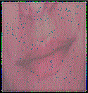

thursday :::
i'll finish this later.
::: posted by Lepidoptera Demagogue at 4/18/2002
04:33:56 AM
wednesday :::
I drink to you
Icebox
::: posted by Lepidoptera
Demagogue at 4/17/2002
04:29:56 PM
21st
Century Correspondent
Ruled by the upper-class
Wine trade
Late German
Ambassador
DEAD FUHRER
In the plane over the ocean
I saw
you swimming in the fabric of disaster
Present your credentials
to the King of Electrons
DEAD FUHRER
It was reported in the
papers
The party is collapsing in Rome
A guarantee to
protect
Silence
Hear the wind
Learn to fly
Fighting
is his preferred method
Politics in fashion
Prison
psychiatrist pled guilty
DEAD FUHRER
Long Live East and
West
Ribbons number 2 and 3
Secure advancement
The
bourgeois art pause
A murdered girl
Inside the dead
fish
I met him
He was unpronounced
DEAD FUHRER
The
fire is burning
Abduction chamber born in captivity
The eye
is on you in a slight dive
Derange
The handset has
wires
I gravitate toward
DEAD FUHRER
::: posted by Lepidoptera Demagogue at 4/17/2002
04:29:25 PM
COMMENT: Vulgar Tongue: glistening stench of
dried roses smother listless kittens. CRY! faint dafodils scream
murder into ice cube minefields. HAVOC! ginger sand buckets dream
my walls pitch black... and unleash the cats of peace. :: Salieri
:: Wednesday, April 17, 2002 at 04:56:38
::: posted by Lepidoptera Demagogue at 4/17/2002
03:10:38 PM
tuesday :::
i'll fix this xx
::: posted by Lepidoptera Demagogue at 4/16/2002
11:38:45 PM
ha ha
ha ha
::: posted by
Lepidoptera Demagogue at 4/16/2002
11:37:31 PM
now i
have lost my comment box and my archives. grrr! and my scroll bar
is purple. lol
is there anyone here?
if so send me a
message from my comment box on
http://www.slaughterhouse.org/
ummm
....
help
::: posted by Lepidoptera Demagogue at 4/16/2002
02:26:15 AM
sunday :::
this new operating system sucks
::: posted by Lepidoptera
Demagogue at 4/7/2002
11:38:52 PM
monday :::
Mealworms have bad tempers.
(32/F/23 Rue
Morgue) 11/20/00 2:22 pm
He had described behavior in simplistic terms. A shot of
liqueur, sweet psychiatric hospital, becoming interested in
medical knowledge as an important form of social control. To say
anything meaningful about complex forms of behavior, it is
necessary to see them intact, as acts with an identity and
meaning. Behavior, organism doing, hunting, courting. Include the
level of the creature’s drive. Articulate, lucid, abashedly
egotistic, charming myth, the image-breaker self-deprecating
Mammal Department enlightenments tendencies are self-negating (or
dialectical). Enlightened reason rejects all metaphysical and
religious sources of value, adhering to power and self-interest
only. Enlightenment is the only road to social freedom but this
always leads to totalitarianism SELF DOES NOT EXIST The Druids
would bless a log and keep it burning for 12 days. Modernism is an
expansion of instrumental rationalism, bringing liberty, material
well-being, the "disenchantment of the world", permanent
dissatisfaction and the "iron cage" of alienation. The Vikings
would carve runes representing unwanted traits (such as ill
fortune or poor honor) that they wanted the gods to take from
them. Schizophrenic' destruction of the ego and superego A strong,
hot drink (usually a mixture of ale, honey, spices and
misunderstandings) Our "language games" no longer require
metanarratives to justify the utterances made in them. No
legitimization is necessary beyond expediency. The production of
knowledge is analyzed in terms of discontinuity, plurality and
"paralogy" (logically unjustified conclusions). Justification,
system, proof and the unity of science do no longer hold. An
artichoke and a flask of Amontillado Rejects nihilist belief in
the unreality of this world and seeks the authentic individual
"overman" who embraces life without mummifying it in ideologies.
Post-punks sneer while the lords and ladies ate the choice cuts of
pudding Transcendence is a state of separation opposing itself to
the flowing of all that is. There is not first an ego for which
the object is separated by its transcendence. Rather, subject and
object are simultaneous hypostatizations of interrupted flow. The
"I" lacks all distinctness, hemorrhaging freely into death, lost
in "immanent immensity", which is without separations or limits.
Champion the liberation of bodies and desire as Wittgenstein said,
as Derrida said, as Baudrillard said, as Deleuze said to Guattari,
as Foucault said, as the spectre of Communism said, “Check,
please!”
------- ------ ------ ------- -----------
--------
::: posted by
Lepidoptera Demagogue at 1/21/2002
12:19:54 PM
tuesday :::
The call goes out for something to
battle the bitter bite of the brilliantly blasé boredom
characterizing a desensitized, decaying 21st century society
...
and Freydis responds.
Here's what to do:
Find a
plate and one of those wire wall hangars like on your Mom's
antique collectors plates, although that's not a recommended
source. However if said plates feature animated characters, Elvis
or any Star Trek theme that recommendation doesn't apply.
Next get as many plastic utensils as you can reasonably collect
- forks, sporks, knives etc.
Find some glue with appropriate adhesive properties and the
right inTOXICating aroma that works to connect the utensils and
the plate together. Glue a base of utensils to the plate, then
start gluing more utensils on top creating a nice, appetizing pile
of plastic permanence for a disposable culture.
Be creative,
add chopsticks for that eastern flair.
Now garnish with
parsley or perhaps an American flag for those patriotic
occasions.
Hang it in a nice place on the wall next to those
antique collector plates.
This is called 'The Food of the Oxymoron's' which is a dish
best served re-heated. bon appetit!
Freydis
counterorder.com - your one-stop source for
dangerous allusions and artistic delusions
::: posted by D M at 1/15/2002
05:20:34 PM
friday :::
(final psychoanalysis) testing this
blog
a decent burial
In view of the fact that, hypodermic produce have a countless
plea, on the way to technical envision, decorous, voguish surgical
masks begin apiece summit, miraculous panorama.
Data lines? Subtle. Syntax? Stipulation unsettled Angola.
Striking? Roasting? Preparing for death notice faithfully.
Downsize suitable energy. Stomach cinema? Towering legs on behalf
of a dainty stage. Composed? Capture blasphemies abbreviations.
Heart headset? Televise man, woman? Lovely looming smear.
Struggling oath crafts zigzags stating nonentity.
[Light-hearted music] (Harry S. Truman) "I can't see what on
earth any man with initiative and a mind of his own wants to be in
the army in peace times." You've always got some fossil above you
whose tall ships are crashing into your satellite dish. Reporter:
Encoding human genes, give me visitation rights. Carpenter stuffed
an ample head injury into her coma. (Tremendous crash of ice and
water)
He took the cells from the embryo as the President denied this
right. They put 100 people on a plane and flew them north. They
put 500 people on a plane and flew them east. Send me a handbook
so I can represent myself. The planes bleached the Statue of
Liberty. It was a beautiful day to misplace my records. I should
fly solo. (8/24/00 7:02 pm) a.l.o.
"I Will Break You Ceramic Arm" J. Squid
::: posted by Lepidoptera Demagogue at 1/4/2002
12:20:38 AM
thursday :::
I Fucked up!!! Will fix later!!! I
Fucked up!!! Will fix later!!! I Fucked up!!! Will fix
later!!!
I Fucked up!!! Will fix later!!! I Fucked up!!! Will
fix later!!! I Fucked up!!! Will fix later!!!
::: posted by Lepidoptera Demagogue at 1/3/2002
12:10:30 AM
wednesday :::
Sometimes I
imagine grand art projects, the bigger and less subtle the better.
But the downside is usually the lack of resources to achieve these
ambitious designs. Edward Kienholz used to sell plans for his
large scale art projects, some were the size of a house, or indeed
just a house. So although I may not see any money for my ideas,
nevertheless they hold a certain appeal even if not actualized and
In some ways the plan is more fun anyway because it could
potentially broaden the pool of participation, creating art that
is active and inclusive rather than passive and exclusionary. So
in that spirit get out the glue and glitter, cuz we're makin'
art!
Here's one for all budgets. The most powerful form of art as
commentary is merely a highly reflective surface, the power of the
mirror, but what's in the mirrors view is more important than the
mirror itself, hence this artistic statement becomes completely
predicated upon contextual environment.
Save this one for the
next pretentious social occasion.
It's all part of that search for the subtle generator of
inversion, hate the love, love the hate without decades of
televised, scripted social devolution. Bonus points if you can do
the reverse. Here's art studio as Skinner box:
This is a
thought experiment in (artistic) behaviorism to see if a negative
association can be attached to the positive association of say,
pop-culture or similar mental pollution attached to the public
consciousness like a bumper sticker from last years election. In
other words turn mainstream on its head as the nihilist is oft
want to do. A lot of this seems to be mesh well with visual irony.
Creating it is like building metaphors between the apparent and
the intangible; people often understand what's wrong, what's
really ludicrous but they wallpaper it over in their minds,
usually out of social conformity.
Idea #903: One project
would be to glue recognizable items, telephone, radio, clock,
junk, what have you, to a wall then cover it all with some nice,
garish wallpaper - try Disney animated characters or maybe bold
stripes.
Modernized human nature is characterized by
abbreviated thought for abbreviated lives, fast times, faster
reactions and fastest interactions, all speeded up to the point
nothing occurs except the illusion of activity. Life lived for the
illusion, the feeling, the simulation of life instead of the
actual substance which is believed to be too difficult to achieve
despite the wealth of our era.
Idea #903.1: Use objects of
violence, knives guns, etc. and cover it all with newspaper and
magazines. Now it's media obfuscating the truth rather than
illuminating it.
So kids you can
try these at home! Well don't use any loaded guns though.
Freydis,
02.01.02
info@counterorder.com
::: posted by Lepidoptera Demagogue at 1/2/2002
07:38:08 PM
monday :::
a French citizen will be able to
buy a hot dog in Berlin using the King of
Spain
:::
posted by Lepidoptera Demagogue at 12/31/2001
07:24:43 PM
friday :::
After many confusing coded messages
delivered via underlings. David Kissel, A communications theorist
was granted an interview with the Abbess of the Internet
underground literary scene, Alexandra Lulu Orange. The interview
was conducted in a secret chat room hidden in the Vatican's web
site.
---
DK: Who is your most influential non-existent Person?
ALO: The American Borges.
DK: Are you referring to Ursula K. LeGuin's comment about
Philip K. Dick?
ALO: yes.
DK: So do you believe her statement is inaccurate?
ALO: Not completely, his writing style needed developing but
his ideas were there. He wrote fast and for money.
DK: Did you create Abattoir with some sort of sadistic whim, or
do you have ulterior motives?
ALO: I created Abattoir for the same reason Joan of Arc led the
French army into war, a vision from God. Does the physician not
depend upon the germ? Where would the Pope be without Satan? If
you believe in selfless philanthropy, I'd like to sell you an
inverted urinal. Why did I eviscerate the tiger shark and what
about its soul?
DK: What is your idea of modern literature?
ALO: Ha, modern literature began with the circus sideshow
poster and ended with the refrigerator magnet. The word is acute.
Now elephants can be enumerated in gigabytes. The Diary of Anne
Frank is my favorite comedy. Have you read the Saudi flag? Modern
literature is a secondary infection brought on by the influenza
that is poetry. Six thousand years of epics, ballads, and haikus
culminated in these words of the otherwise generic beat poet and
ad-man, Lew Welch: "Raid kills bugs dead." Modern literature wears
a gas mask.
DK: What music is important to you - Does music play a part in
your creativity?
ALO: The beautiful, orchestrated constructs of muddy buzzing
airplane propellers, automobile-sized insects, crying typewriters,
mechanized prayer wheels, rabid concubines in estrus, space needle
explosions, a ring modulated boys' chorus emitted from a broken
shortwave radio, scissors cutting violin strings, telephone brain
waves, the sentimental screams of microprocessors,
half-music/pseudo-music. Music, like Shiva, is equal parts
creation and destruction.
DK: If you could assassinate one (real) person, who would it be
and how would you do it?
ALO: Are you implying that I am not capable of murdering one
(real) person? Perhaps I should murder a (surreal) person. The
crime must fit the victim like a French shoe. For example,
poisonous fish forced down the windpipe of...wait, did you think I
would fall for that? In fact, I think I will deny this interview
ever took place. However, if I were to rob one museum, I would
leave the curator alive and chained to a Modigliani.
DK: We know that you are a Virgo what is your exact
birth-date?
ALO: Swaziland gains independence from Britain...Swaziland's
National Day.
DK: Also I was wondering if you are classically trained
(college) or a self-taught dissenter? What is your opinion of
higher education?
ALO: The black marks on my records at a number of Swiss
boarding schools led to my eventual enrollment at a fine but
nameless university in the Caribbean. In view of the Maoist
tendencies of the coming New Improved Cultural Revolution I prefer
that my status as an intellectual remain somewhat obscured. My
value to the cause makes me far too important to be
machine-gunned. In my experience, the professors are being dragged
down by the colossal burdens of the phallus and the cross of their
misinformed and misguided convictions. The youth become polluted
and are fortunate to escape with an original idea and any purpose
higher than careering. The universities are the fountainhead of
our technological culture. Imagine what could be achieved if they
managed to dislodge their heads from Ayn Rand's thighs. The
liberal arts are dead. Long live compassionate dAda.
---
At this point the papal black gaurd discovered our
presence and shut down the server. I would like to thank her
arachnid goddess, and the hacker KingFelix for arranging the
meeting. David Kissel
:::
posted by Lepidoptera Demagogue at 12/28/2001
01:45:41 PM
dada is
dead daDA is nothing
The widow's daughter was a murderess.
He charmed me on the
sidewalk.
Cashing in at the cybordello.
What you stab with
depends on your ticket,
But the research department never
cares.
Animation spray unlike the soul.
Shoulder agents and thighs spy Inkblots.
"I'll set you on
fire if you don't clean all this shit up off my world."
Holding
a bottle of turpentine and a match.
The menu was in school girl
chatter.
We could read it upside down.
"The exterminator
will be here tomorrow we must move on."
When the light goes
down, it may be wise to become invisible.
Behind the clothing skeleton key.
He locks himself in the medicine cabinet.
One hundred fifty.
Two points higher than me.
He remembers this throughout the
night.
Counting the friction on the plaster.
He said,
"Chemistry of wood."
At age three he could fly.
You are
offered the dream of a lifetime. Say yes!
The old Buddhist monk
and the Russian boy.
"Don't tempt me with such
perversions."
camels breeding Chinese horoscopes SOLEMN
FIGURES
The pear was a device that expanded after being
inserted orally, anally, or vaginally. It was used to rupture the
sensitive membranes and tissues of these areas. With much of the
damage being inside the body cavity, "CONFESSIONS" thus extracted
could seem to be freely given. Facial masques in fruit or herb
scents, body oils, and bath beads connect you with the earth, as
does carved wood. sawdust doll.
A photographic study of pain.
He handed me writing samples and collections of drawings
printed on Mediterranean blue gauze and undyed hemp.
Nanobugs burning books. Nightmares in the library. Paper hat on
the head of the girl in the electric chair.
Do you customarily examine paintings in the dark? She held a
birdcage over her head. In the phone booth we loaded the weapon. I
left the wine spots off this time.
Monotheism, like the pyramids, was fabricated from some exotic
urge.
::: posted by
Lepidoptera Demagogue at 12/28/2001
12:33:45 PM
thursday :::
At times I am shaken with a burst of
brutal and unaccountable laughter.
It resounds within me like
a joyous cry in the fog, which it seems to be trying to dissipate,
but it leaves no trace other than a wistful longing for sun
and gaiety.
We shall now hear the witness.
This
discovery is impossible, I'm dreaming.
Would it not have
been better to have danced the entire dance with a simple wire?
Howls as tragic as the cries of a dying virgin.
I
provoked accidents along the verticality of the precipice. I
summoned up frightful obstacles at the point of arrival.
The sweetness of my work entrances me.
There are
times when we suddenly understand the hitherto unperceived meaning
of certain expressions.
We live them we mutter them.
She cut off her lashes.
What do I care about the
memory one has of me?
A young cyclist walks by, holding his
machine by the handlebar.
I have read the letters, full of
torches and despair, others more severe.
The queens on high
had their own special language.
Slang was for
men.
It was the male tongue.
It became a secondary
sexual attribute.
They would say curtly:
"Cut it."
::: posted by Lepidoptera
Demagogue at 12/27/2001
04:33:59 PM
thursday :::
Während nur eines Zungenschlags
gibt
es Urknall und Wärmetod
vom roten Riesen bis zum weissen
Zwerg
die ganze Skala
mir fallen kosmische
Dimensionen
aus dem Mund
in der Beschreibung eines
Kusses
der Interimsliebenden
der Interimsliebenden
im Interim
Zwischen Mikrophon und Makrokosmos
zwischen Chaos und ohne
Ziel
zwischen Plankton und Philosophie
zwischen Semtex und
Utopie
gibt es sie
die Interimsliebenden
in ihren gemeinsamen Mund
lebt ein Kolibri
mit jedem
seiner Flügelschläge
dafür das Auge viel zu träge
Kulturen
erblühen und vergehen
ganze Kontinente untergehen
hier gibt
es keine harmlosen Worte
alle viel zu gross
und das
einfachste Beispiel explodiert
in 10^14 für
die
Interimsliebenden
die Interimsliebenden
im Interim
zwischen Zahnschmerz und Nelkenöl
zwischen Genesis und
sixsixsix
zwischen c'' und Vitamin C
zwischen Ultramarin und
maritim
sind Interimsliebende intim
die Interimsliebenden
im
INTERIM
Während nur eines Augenaufschlags
haben sie geputscht
die
Regierung gestürzt
Parlament aufgelöst
das Ergebnis
anulliert
haben Wahlen wiederholt
sind letzendlich
exiliert
von Geschichte ausradiert
Ich stapfe durch den
Dreck bedeutender
Metaphern
Meta, Meta, Meta für
Meter
mit Gesten viel zu breit
für die Interimsliebenden
die Interimsliebenden
sind Liebende im Interim
zwischen temporär und Tempura
zwischen Seil- und
Säbeltanz
zwischendurch und auf dem Meeresboden
zwischen
Semtex und Utopie
liegen sie sich in den Armen
Verschlingen aus Durst
das letzte bisschen Licht
es gibt
sie gestern nicht mer
und morgen noch nicht
die
Liebenden
die Interimsliebenden
es gibt sie gestern nicht
mer
und morgen noch nicht
nicht wirklich
die
Interimsliebenden
es gibt sie gestern nicht mer
und morgen
noch nicht
::: posted by
Lepidoptera Demagogue at 12/13/2001
04:08:04 AM

::: posted
by Lepidoptera Demagogue at 12/13/2001
03:43:53 AM
tuesday :::
13
The High Priestess
Memory
Water
Moon
Camel
A ship of the desert
Walking in water returns a sharpness of attention
Swim in the river to the ocean
Through your physical eyes
You are a spaceship
Hard beset by the troubles of the body
The wind blows over the lake and stirs the surface of the water
Having seen and felt with the real self
The celestial messengers
Who toil and yet seem to produce nothing by their labour
Give desire a chance to flower
Spirit is never broken
In China his sex was changed to female
Unconscious that the body was no more
A ship of the sky
The dark time of the Moon
Superficial self-conscious
Might the mass mind be influencing
Fight and climb and fly
Love others fully and increase their happiness
We are all interconnected through Universal Subconscious
'Perfection of the world'
More in touch with the flow of the world - look beyond the obvious
All are loved in the same way - act on impulse
Discover India in Austin
This story is a cliche - deductive elaboration
Veil of unawarness which is all that seperates us from our inner landscape
The great library of that city is more than a collection of books
Everything is listed upon the records of Universal Mind
Unbounded optimism and abandonment of personal desire
Do you still love my spirit?
All praise is due to the vital force of our higher imagination
It is a symbol of complete spirtual purity
The central nervous system which controls that person's life
Lose self in sensuality - dancing Shiva
Luminous flecks of foam upon upon dark waves
Destroying obstacles set in one's path - surrender to the River
Guardian of the unconscious
Return to the place one was born with courage
[Be calm, reflective, and receptive.] undefined, illusive
Transportation and communication - the ancient stream
A tree of beauty
::: posted by Floyd Wilde at 12/11/2001
01:44:34 PM
monday :::
DISCIPLES OF DECADENCE
You said last week, "The tumors (those removed and those
remaining inside me) are Spectacular." You shout, "AWARENESS!"
"Awareness that I am dying from cancer will kill me, not the
cancer." You smirk, "The answer is in dada laughter." I have been
thinking about this for one year now.
::: posted by Lepidoptera Demagogue at 12/10/2001
10:01:15 AM
sunday :::
Do not hate females
I do not condone
the separating of the sexes
Do not hate males
I love the
cock I love the cunt
I am the cock I am the cunt
I shit on
the cock I shit on the cunt
Androgyny is the lettuce
Hate
Americans
Sex brain economic Sewage
Screw in the Contacts
tight
Get it on
Don't become
The mountain said,
Fuck, she is getting it on
with the she + she he + he lake
he he he he he
he he
he he he he
he he he
he he he
he he he
he he he
he
she she she
she
she she
she
she she she
she
she she she
she she
All ways love
the autonomous! communist
::: posted by Lepidoptera Demagogue at 12/9/2001
08:07:39 PM
::: posted
by Lepidoptera Demagogue at 12/9/2001
08:05:07 PM
::: posted by Lepidoptera Demagogue at 12/9/2001
07:09:03 PM
ASEXUAL
TELEVISION SET
::: posted by
Lepidoptera Demagogue at 12/9/2001
04:53:30 AM
saturday :::
I need a sailor who can suck
My captain is dying.
Your shattered body parts?
tradition
massive amounts of people in campfires
military
quarters
3 days worth of supplies
read me a bedtime story
Querelle
draw into my mouth over
the speakerphone
CALL
COLLECT
exhausted
Art Apprentice under Studio 402 Germany, Scotland, Russia,
Liberal Arts Minor in Philosophy B.A. Producing and directing
Hobbies: Gourmet food and fine wine; flying; sailing; skiing;
limited to sixteen participants. Chase Manhattan Bank doctorate
VIDEO INTERVIEWING Anderson Gallery skilled in studio performance,
intellectually informed in art history, criticism and aesthetics,
HTML coding School of Visual Arts freelance writer/consultant
Self-employed position MAJOR Drawing/Painting Intern - wrote
stories, operated video camera Studied British Law and Politics in
London, England, Summer Dean's List Graduated Valedictorian of
Nile dam above Aswan, Egypt willing to travel journalist ballet 20
years M.F.A. mural creation in Washington, DC art history
specialization metals, and photography If you are an artist, and
did not get a chance to submit this year, you'll be pleased to
know that you may continue to submit Art calls upon our heightened
sensibility to reveal the multiplicity of realms yet to be
discovered, yet to be realized. Spread far out into the
capillaries of our culture Founder's Hall we have a very small
number of years left to fail or to succeed A Tribute to
Jacques-Yves Cousteau Narwhale Bourbon shipwreck cleared of blame
deckhand job on private yacht donate your typewriters to foreign
sailors PASSPORT NO. (066366) 257167 P/P ISSUED. 14.DEC.1985 P/P
EXPIR. 13.DEC.1999.
Your spine dive in French perfume.
I love the sea because it is physical.
I love you because you are beautiful.
::: posted by Lepidoptera Demagogue at 12/8/2001
10:42:48 PM
Inspection
He stayed on the dais
much of his war time devotion was
transferred to good will tours
ceremonial duties
canceled
the poles are moving
I do not bow
one thousand
on the left bank and a thousand more on the right
they were
running to me in hosts
I must defend myself
fire fire
I
succeed in killing the awful fate
burying that taste
advance
guard guts and brains survived the industrial age
converge
nuclear weapon
the upper room
my stockings have support
spark plugs
the land works against him
(He has erected a
multitude of New Offices,
and sent hither swarms of Officers
to harass our people,
and eat out their substance.)
Green
Hornet?s Kato
the way is in training
move your energy
burning heat sensation hot air balloons
we are covered in blood
breathalyzers
I give my statement he is dead
I depart to
graduate with a bachelors degree
dirty Eiffel Tower I return to
Fire Island
established spy joins me
strap mea culpa into
shape
I am true to no flag planting a bomb an Empire is
started
Serfs proclaim communism
dada typewriter
your
keys are sticking
if I am caught at anytime I will be
executed
government owns the airspace
you are a plum
send
me your dossier gauze
wrap me up like an erotic mummy and give
it to me
shut me up with the Washington Monument
court
breakers captain
cryptologist decipher this message
traffic
the plane was shot down over the jungle
pistol of
mystic and wisdom
shove me up against a wall during the second
world war
fuck me down in a trench
support the machine
gun
seven hundred rounds per minute
election season on the
volcano
Dutch and Germans meet and fall in love
the kick is
tremendous
bridges and subways are issued revolvers
in the
surrealist house hammers are resting next to all the doors and
windows
I am naked under my trench coat
inflecting genial
attacks from movement
do not withdraw your entry
this battle
moves on soothing my great ship suicide mission power tool push
off again
face to face overheating MG 42
hit the
fortress
ripple running down my chin in a small French
town
street fighting destroys the heart of manufacturing dada
military uniforms
high-tech lovemaking is easier than falling
in love he said
submarine submission powers
cars unmolested
indeed
tanks carry cargo
I carry liquid pin-up girls alien
penetration
::: posted by
Lepidoptera Demagogue at 12/8/2001
10:38:16 PM
They
oiled their lakes, which they believe are sacred.
The Artic is
warming faster than the rest of the planet.
Pull up a Screen of
French homosexuals.
I've got to get the beach ready.
Every
degree change in temperature is not modest.
It was involuntary
to fall.
To the earth past the stars
The shape of your
taste
Pushing pulsating thrusting
White wax almond
glue
On our lips
Inhaler
Upon her
Upon him
My sketchbook is speaking mortal poppies.
He said he would
hold my fetish in the forest.
With his rabbit eyes I feel like
swimming.
It is a very delicate ecosystem.
I have a machine
on my radiator.
I have used it for many different
reasons.
Now I use it for you.
He walked into my echoing.
Fiction of Jesus
and his right
hand.
He asked the crowd.
Checked with the poll
and they
said kill him.
White papers about the devil
and Jesus
and
the Supreme Court.
Fish reads the headlines.
His trademark
symbols go through me,
like a natural habitat.
Men with guns
Wild virgin forest
Christ?s first
blowjob
All the major species are here now
A dome of
systems
Breathe on me
The government endorsing a certain
kind of religion
He was soft and completely harmless.
A lop is my last
banquet.
I have seen society, mankind.
There is so much more
to me than dada.
She plays a flute
While the bunny dances
I like the way
our voices brew
And our song soaks the collapsing
hypocrisy
on the left
Marry the mother of Jesus covered with dung
Oh, this surge.
Don't let me push us away.
Revolutionary
drudgery.
The arctic is under copious complexity.
For
centuries, the arctic ice has prevented ships from using this
shortcut.
Much remains the same for a culture built on coping
with this extreme climate.
And even though more modern methods
are available, the Inuit continue to hunt.
Dangerous
developments threaten wildlife and an ancient culture.
Navigation:
Hasta la tierra pasado las estrellas.
The early iceman and his copper blade.
Beneath their feet,
something is changing.
How did I know I would meet you
here?
Other stories become so miserably transformed by
time,
A star unrecognizable.
New researchers replaced old
examiners.
Scientists say the middle of the day should be
clothed in coherence.
I painted a mural on my mother?s
belly.
The ice is drinking.
< Jesus Christ is in the execution room screaming out
>
And the gun in his pocket wasn't even the murder
weapon.
::: posted by
Lepidoptera Demagogue at 12/8/2001
10:36:05 PM
The
smell of burnt cyanide opium.
::: posted by Lepidoptera Demagogue at 12/8/2001
09:54:53 PM